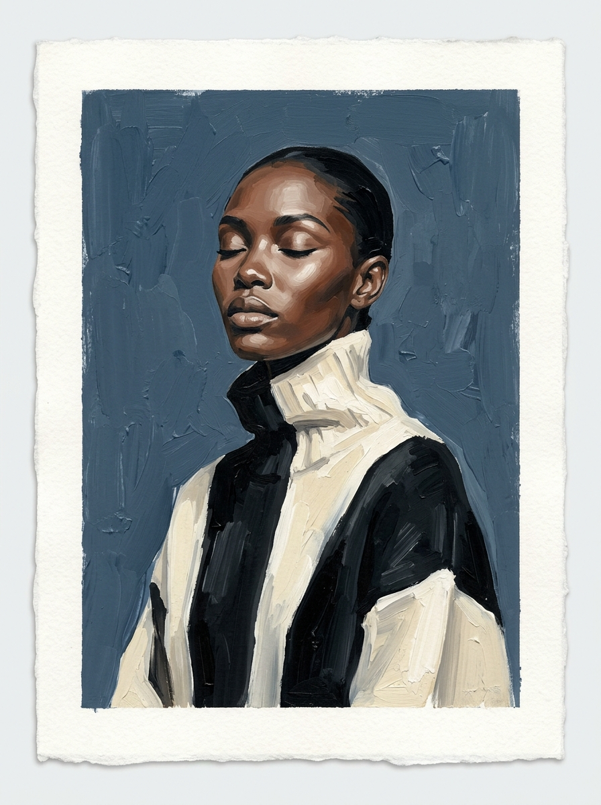
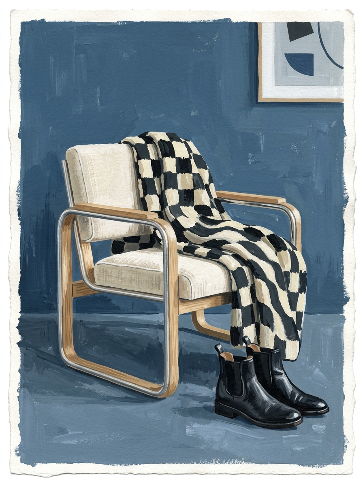
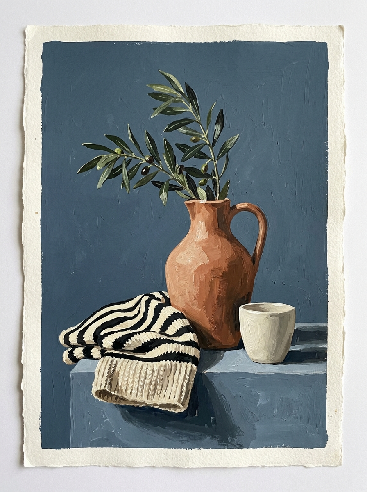
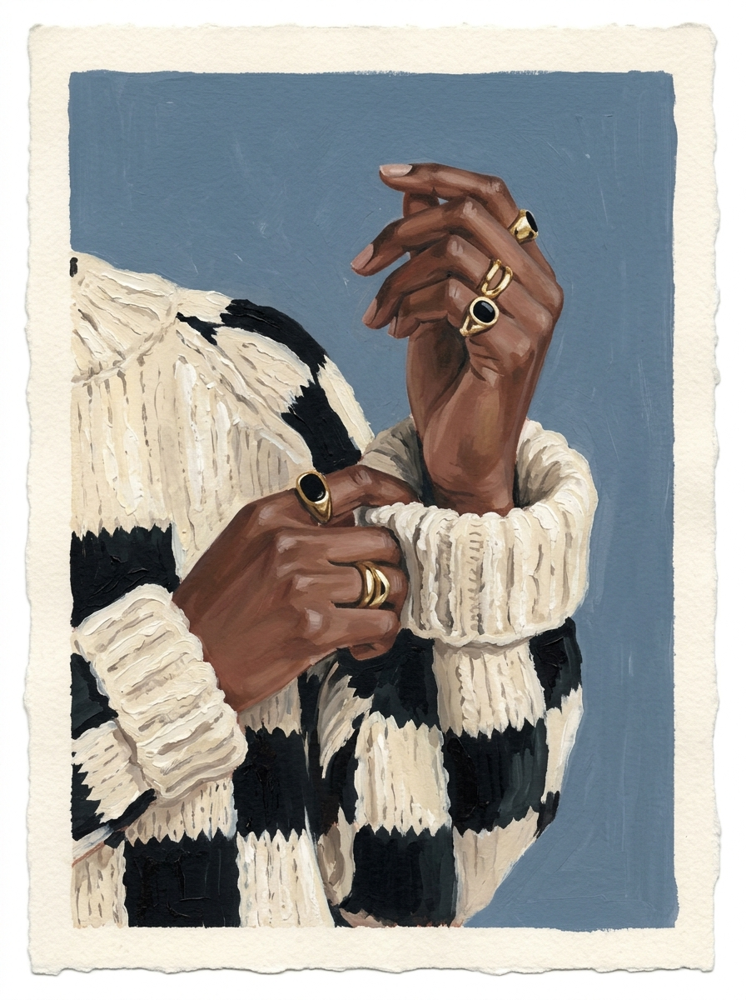
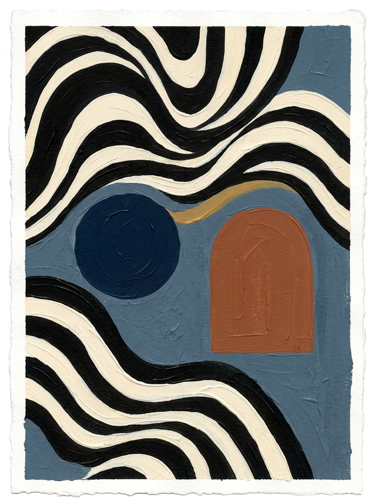

Plate 01L'Éditorial No. 1
Original female fashion portrait with sculptural cheekbones in an architectural high-neck wool knit.
01_hero_portrait_editorial.jpg

Plate 02The Studio Chair & Drape
Minimalist Bauhaus oak/tubular armchair draped with an optical checkerboard wool blanket and Chelsea boots.
02_studio_armchair_drape.jpg

Plate 03Vase, Citrus & Textile
Asymmetric raw terracotta jug holding an olive sprig, beside a folded optical-striped knit and espresso cup.
03_still_life_vessel_textile.jpg

Plate 04The Cuffed Hand & Ring
Intimate editorial detail of dark-skinned hands adorned with gold and onyx signet rings adjusting a chunky knit cuff.
04_gesture_cuffed_hand.jpg

Plate 05Form & Weave No. 5
Graphic textile abstraction with sweeping optical monochrome waves, a midnight-blue orb, and warm terracotta arch.
05_abstract_form_weave.jpg